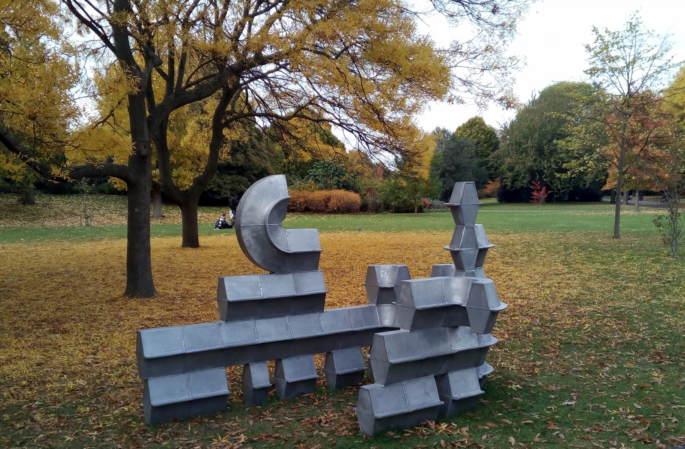
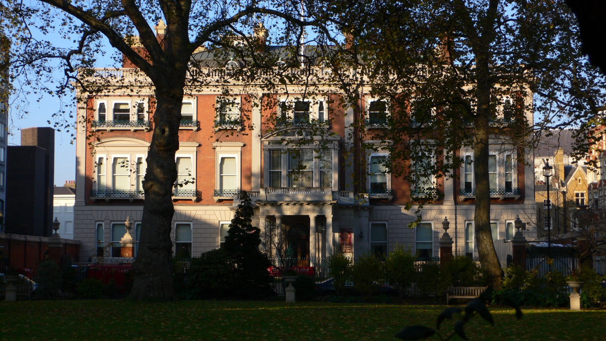
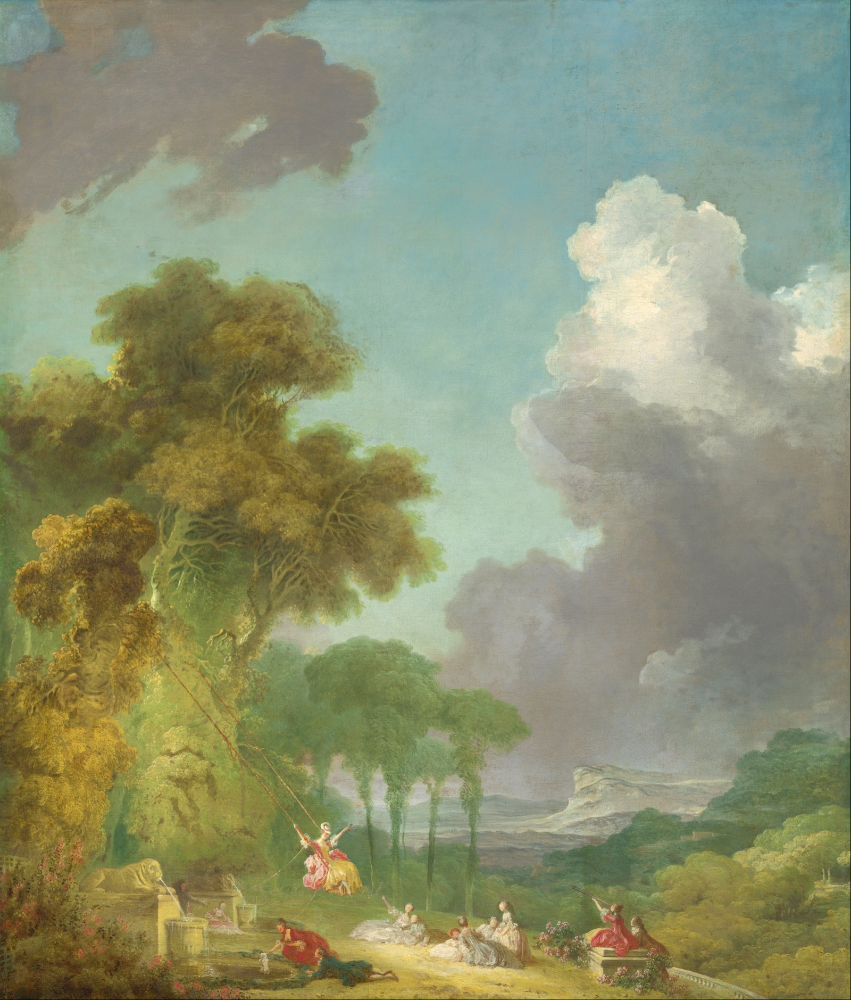
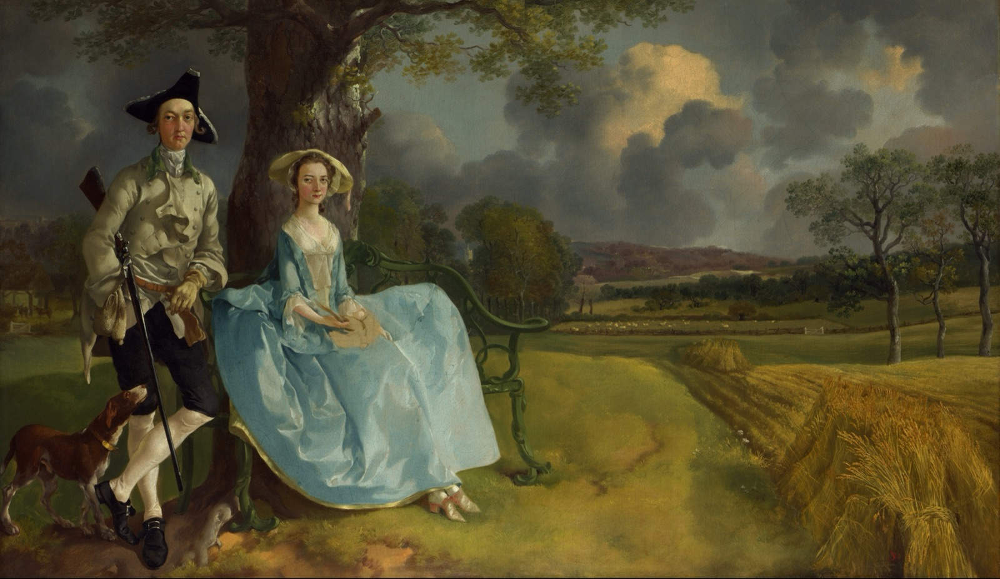
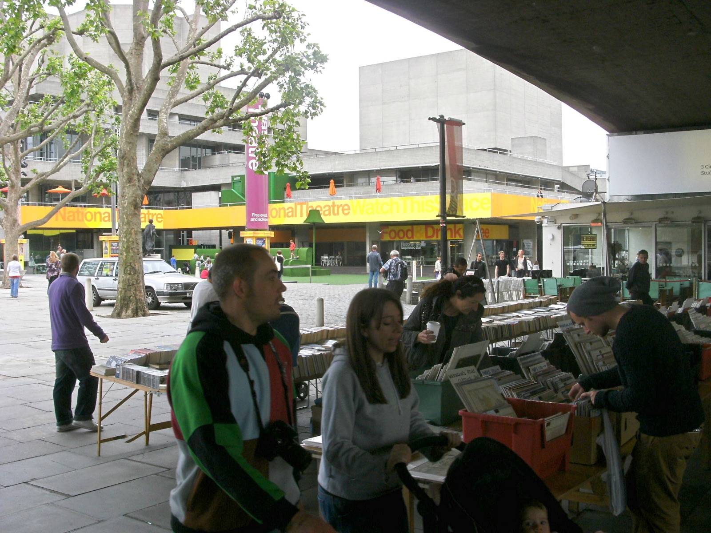
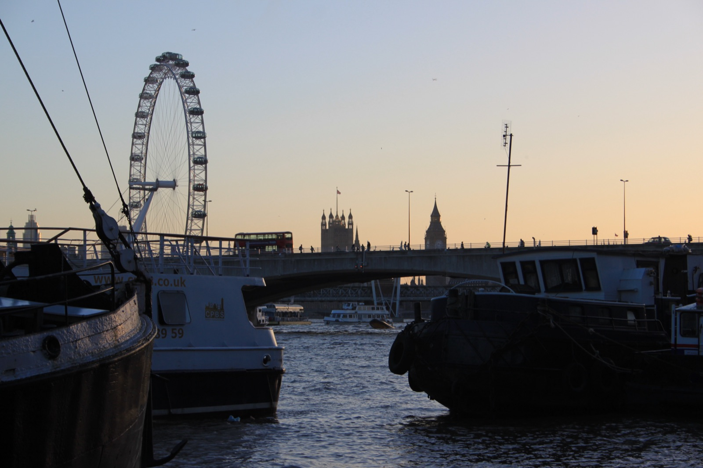
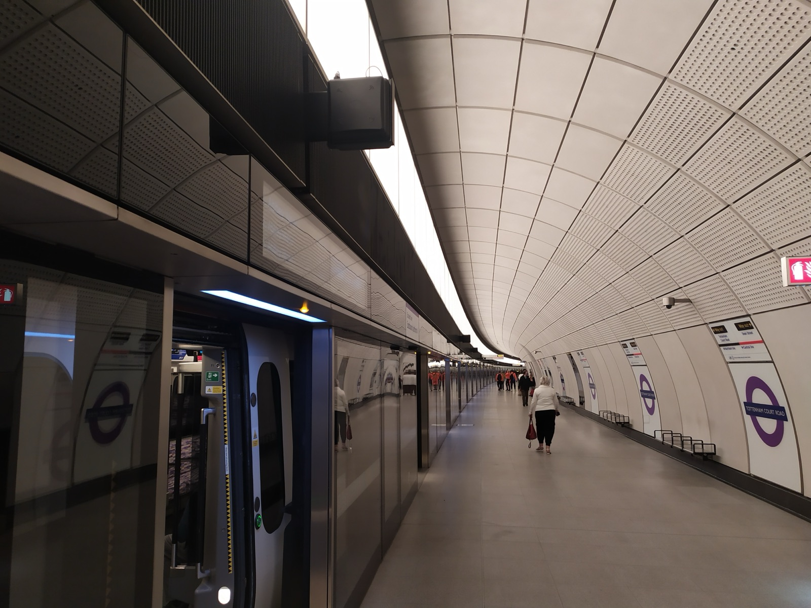

The weather
Cold but kind. Dry all day, with the sun out exactly when you are in the park and cloud arriving once you are indoors with the paintings. It drops to about 8°C by night and there is a light breeze, so the bridge at sunset will feel colder than the number. Proper coat, scarf, and gloves for the bridge. The blue figures are the chance of rain.
Forecast from Open-Meteo for central London, checked Tuesday 13 October. Look again on Friday night; four days out it can still move.
The Park
Off the train and fifteen minutes on foot to eleven sculptures standing in the autumn leaves.
The West Coast line is shut between Rugby and Stafford on 17 and 18 October, so Avanti is running Manchester trains the long way round through Birmingham. They no longer stop at Wilmslow and they take over three hours. Check her actual ticket against the times below.
Wilmslow → Euston
The simplest way in is a short hop to Stockport and the diverted Avanti from there. It is a long sit, so a book and breakfast on board.
| 07:50 | Wilmslow, Transport for Wales train towards Manchester |
| 08:00 | Stockport, change here |
| 08:24 | Stockport, Avanti to London Euston, via Birmingham |
| 11:27 | London Euston |
Good to know
- The same Avanti train starts at Manchester Piccadilly at 08:14, if she would rather board there.
- The train before gets in at 10:32. The one after gets in at 12:20, which would mean starting the plan at lunch.
- Times come from Realtime Trains, checked 13 October. Engineering timetables can still be adjusted, so check National Rail on Friday.
Walk to the park
Out of the front of Euston, west along Euston Road, and up through the white stucco of Park Square into Regent’s Park. About fifteen minutes on foot and a good way to wake the legs up after three hours sitting down.
Frieze Sculpture
Free · no bookingEvery autumn the Frieze art fair puts big outdoor sculpture into the English Gardens of Regent’s Park. This year it is eleven artists, including Conrad Shawcross and Tarini Sethi. Fair week is this week, so the park has a buzz to it, and with the leaves turning it is the best-looking free exhibition in London.

Good to know
- It runs 16 September to 1 November, open whenever the park is. Forty-five minutes is enough to see all eleven.
- The paid Frieze London fair is in tents further into the park until Sunday. It is expensive and crowded, and the outdoor sculpture is the better half for a day like this.
- This is the sunniest hour of the forecast, so it is the right time for the one long stretch outdoors.
Marylebone
Down the prettiest high street in London to a long lunch under glass, in a house full of Fragonard and armour.
Marylebone High Street
WanderOut of the park at the York Gate and down Marylebone High Street. It is a village street that happens to be in Zone 1. Stop at Daunt Books, the Edwardian bookshop with oak galleries and a long skylight, then cut through to Manchester Square.
Lunch at The Wallace
Book 13:15The Wallace Collection’s restaurant sits in the old courtyard of Hertford House, under a glass roof, full of light and properly warm. It is the nicest room in London for a long lunch on a cold day, and you are already inside the museum when you finish.

Good to know
- Lunch can be booked from 12:00 to 14:30, with the last sitting at 14:00. Walk-ins are taken if there is room.
- There is an à la carte menu and a set lunch. Afternoon tea is also served from noon if you would rather go lighter.
- Phone 020 7563 9505 if the online booking is full.
The Wallace Collection
FreeA Victorian collector’s townhouse left to the nation exactly as it was, with the rooms still red and gold. Three things are worth the time. Fragonard’s The Swing is the most flirtatious painting in London. Hals’s Laughing Cavalier is not actually laughing. The armoury is the best in the country outside the Tower.

Good to know
- Downstairs, a small free display called The Wallace Collection at War closes on 25 October. It tells how the empty house hosted two exhibitions in 1942 while the art was evacuated.
- Forty-five minutes is right. Leave by 15:15.
Eight minutes’ walk to Bond Street, one stop east on the Elizabeth line to Tottenham Court Road, then ten minutes down Charing Cross Road past the bookshops. About twenty-five minutes in all.
The River
A painting newly in conversation, a walk across the Thames, the Film Festival’s last weekend, and the sun going down behind Parliament.
National Gallery, Room 1
Free · opened ThursdayA new free show that opened two days earlier. Gainsborough’s Mr and Mrs Andrews, the smug landed couple under the oak tree, is hung next to Yinka Shonibare’s 1998 answer to it. His version uses headless mannequins in Dutch wax-print fabric, on loan from Canada. It is two works in one room and takes fifteen minutes, but the pairing stays with you.

Good to know
- Room 1 is the H J Hyams Room, just off the main entrance. It runs until 7 February 2027 and marks 300 years since Gainsborough was born.
- With a spare twenty minutes, Van Gogh’s Sunflowers is a few rooms away.
- The gallery is open until 18:00 on Saturdays.
Down past Charing Cross and up onto the footbridge. Halfway across is the classic shot, with Parliament and the Eye upstream and St Paul’s downstream.
The South Bank
WanderAn hour and a half drifting east along the river, with something warm in hand. This is the Film Festival’s closing weekend, so the BFI end is busier and livelier than usual.

On the way
- Southbank Centre. Quentin Blake’s Southbank Parade is spread across the site and is free. In the Hayward’s free project space, Musquiqui Chihying’s A Life of Navigation is on until 20:00.
- The book market under Waterloo Bridge, London’s only permanent open-air second-hand book market. The stalls pack up early if it turns wet.
- BFI Southbank and the IMAX. The festival’s free Games Lounge and a choose-your-path immersive piece are both drop-in from 13:00 to 21:00 at the BFI IMAX.
- Hot chocolate from the riverside bar at BFI Southbank, or the Southbank Centre food market behind the Royal Festival Hall.
Sunset from Waterloo Bridge
Up the steps by the BFI and out to the middle of the bridge. The sun sets at 18:03 behind Parliament. Westminster goes into silhouette, the City and St Paul’s catch the last of the light, and then every building on both banks switches on. Many people think this is the best view in London.

Good to know
- It will feel colder up there, which is why the coat matters. Fifteen minutes is enough.
- Stand on the west side of the bridge for the sunset, then cross to the east side for St Paul’s and the City as the lights come on.
The Evening
Off the north end of the bridge into Covent Garden for something warm, then one train out to Brentwood.
Supper in Covent Garden
Ten minutes from the bridge, and the piazza is at its best once the lights are on. Dishoom on Upper St Martin’s Lane is the easy choice on a cold night. Order chai, a black daal and a few small plates. It also works as a big snack if her aunt is cooking.

Good to know
- Dishoom takes small evening bookings only some of the time. Otherwise there is a walk-in queue that is long on Saturdays. Join it at about 18:15, before the dinner rush.
- If the queue is too long, Flat Iron on Henrietta Street is quick and warm, as are the cafés in the market building.
Elizabeth line to Brentwood
Ten minutes’ walk up to Tottenham Court Road. Take any eastbound Elizabeth line train showing Shenfield, sit down, and get off at Brentwood about 44 minutes later, with no changes. Warley is a short taxi or lift from the station.

Good to know
- Trains to Shenfield run every few minutes, so there is no fixed time to make. Leave whenever supper is done.
- Trains showing Abbey Wood do not go to Brentwood. Only take one showing Shenfield.
- Contactless works all the way to Brentwood.
- No planned Elizabeth line closures were listed east of Liverpool Street for Saturday. Check TfL status on the day anyway.
Also on that Saturday
BFI London Film Festival
Closing weekend · free strandAndrew Davies talks about his screenwriting memoir at 13:00 in the Reuben Library. A free 2016-themed DJ night runs in the BFI bar from 21:00, if anyone is still in town.
ProgrammeFrieze London & Frieze Masters
Regent’s Park · until Sun 18The paid fair in the tents beyond the sculpture. Worth it only for real art lovers, because it is a full afternoon and not cheap.
TicketsYuko Mohri at the Barbican
The Curve · 11:00 – 19:00A free installation in the Barbican’s long, curving gallery by Yuko Mohri, who is known for found-object pieces that move and make sound. It is a good rainy-day alternative to the South Bank.
BarbicanOktoberfest, twice
Clapham Common · Olympic ParkThe biggest Oktoberfest in the UK is on Clapham Common, with day sessions. BREW//LDN is at Queen Elizabeth Olympic Park. Both are loud and fun, and neither fits this plan.
ListingsLove Never Dies in concert
London PalladiumThe Phantom sequel in concert, five minutes from Oxford Circus. It is only worth it if she is staying in town late.
ListingsBrentford v Liverpool
West LondonA Premier League match, with engineering works on west London lines as well. None of it touches this route, but it explains any crowded trains.
Gathered on 13 October from Visit London, Time Out, Londonist and the venues’ own pages. Free events can fill up, so check on the day.
Before the day
To do in advance
- Book lunch at The Wallace for two, Saturday 13:15
- Check her train ticket against the diverted times. Wilmslow trains do not run direct to London this weekend
- Check the forecast again on Friday night
- Let her aunt know it will be about 20:00 at Brentwood station
- Warm layers: coat, scarf and gloves. It is 13°C at best and windy on the bridge
- Contactless card or phone for the Tube and the Elizabeth line
- A power bank, since it is a long day of photos and maps
If it rains after all
- Shorten the sculpture to twenty minutes and spend longer at the Wallace, which is all indoors
- The National Gallery is open until 18:00, so give it an extra hour and see the Sunflowers
- On the South Bank, go inside the Southbank Centre and the BFI. The book market may pack up
- Skip the bridge. The sunset view from the Royal Festival Hall’s riverside windows is almost as good
- If her train is badly late, drop the park and start at the Wallace for lunch